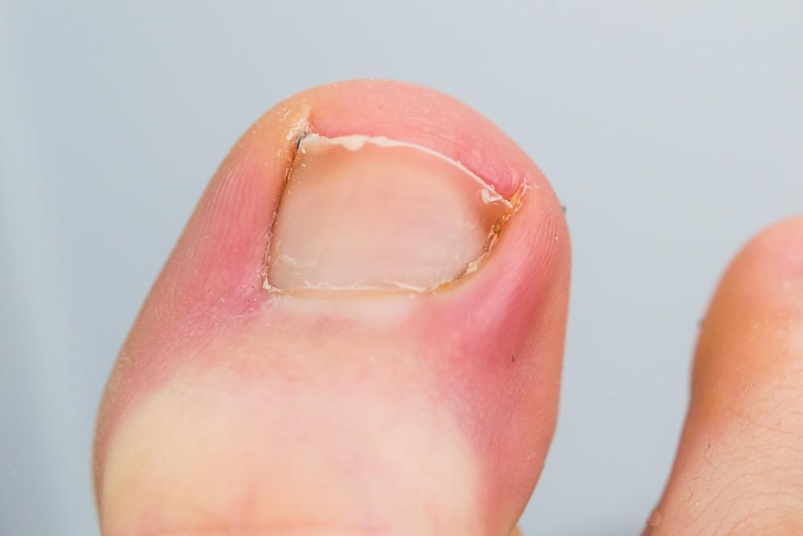
Uñas encarnadas
Tratamiento sin dolor y control hasta que la uña crezca bien.
Ideal si hay dolor o enrojecimiento al costado de la uñaPodología, quiropraxia y terapias holísticas para que te muevas sin dolor. Conoce cada tratamiento, para quién está pensado y cuánto cuesta.
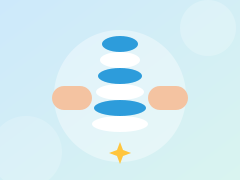
Primera evaluación completaReconoce tu molestia y descubre qué tratamiento te puede ayudar. Las imágenes son de muestra.
Cuidado clínico de tus pies. Desde un callo molesto hasta el control de un pie diabético, tratamos cada caso con delicadeza y explicándote cada paso.
Agendar podología Ver el pie en 3D
Tratamiento sin dolor y control hasta que la uña crezca bien.
Ideal si hay dolor o enrojecimiento al costado de la uña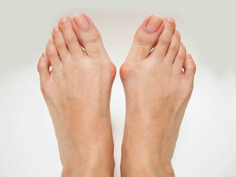
Valoración, protección y consejos de calzado para reducir la molestia.
Ideal si te duele o roza la base del dedo gordo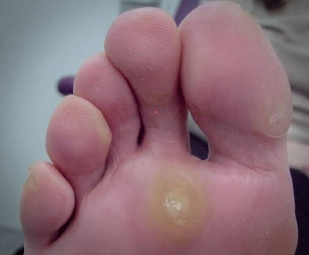
Retiro seguro y consejos de calzado para que no vuelvan.
Ideal si duele al caminar con zapatos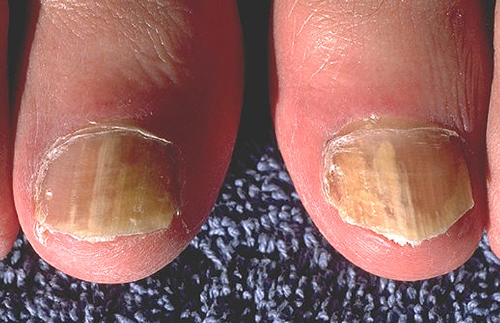
Diagnóstico y tratamiento según cada caso.
Ideal si las uñas están amarillas, gruesas o quebradizas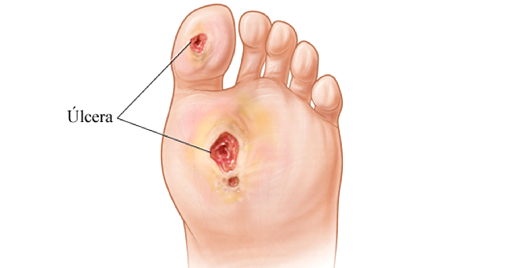
Revisión periódica para prevenir heridas y complicaciones.
Ideal si tienes diabetes o mala circulación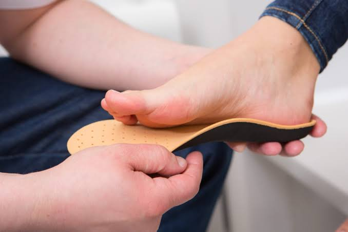
Estudio de tu pisada y plantillas hechas para ti.
Ideal si te duele el talón o el arco del pie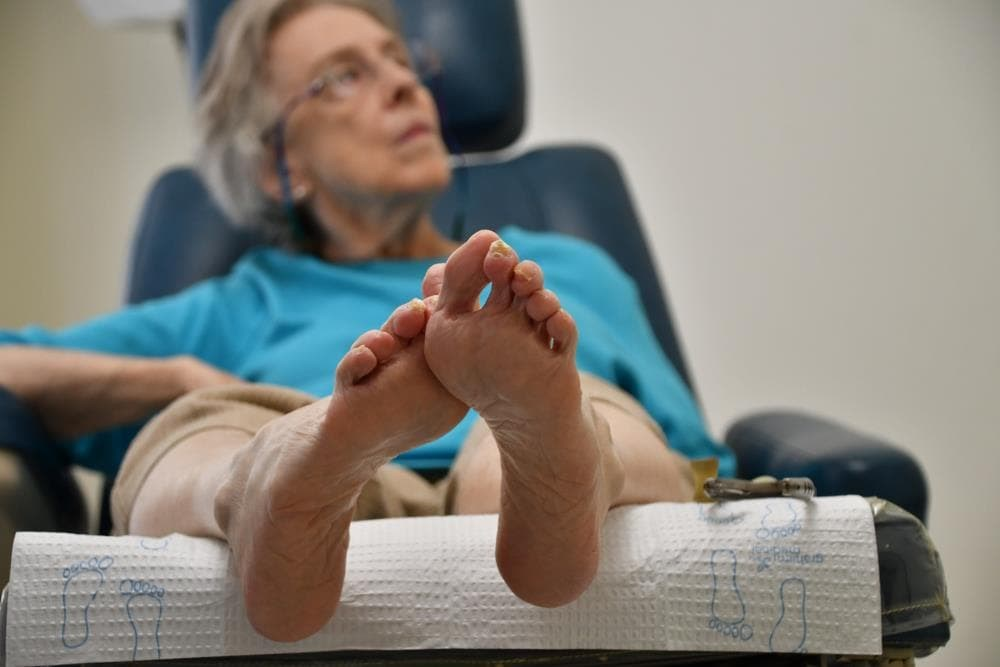
Corte y cuidado de uñas con técnica segura y trato paciente.
Ideal si ya no puedes cortarte las uñas con seguridadAjustes manuales suaves y un plan de ejercicios para aliviar el dolor, mejorar tu postura y devolverle movilidad a tu cuerpo.
Agendar quiropraxia Ver la columna en 3D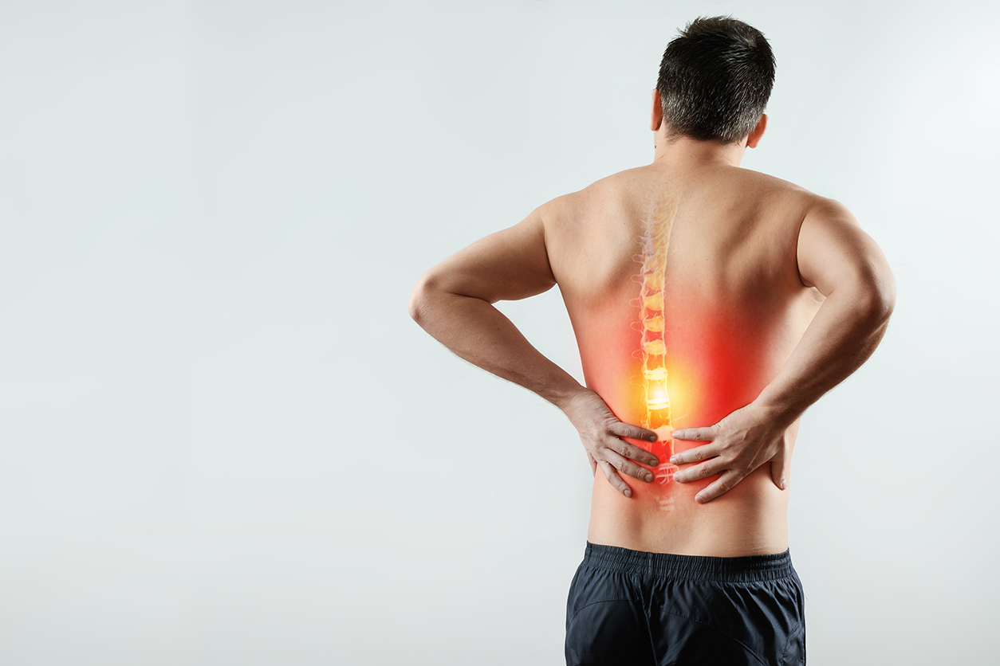
Ajustes suaves y ejercicios para mantener el alivio.
Ideal si el dolor aparece al trabajar o al dormirEvaluamos la causa y armamos un plan de tratamiento.
Ideal si el dolor baja hacia la piernaTrabajo sobre cuello y hombros para reducir la frecuencia.
Ideal si la cabeza duele tras muchas horas frente a la pantalla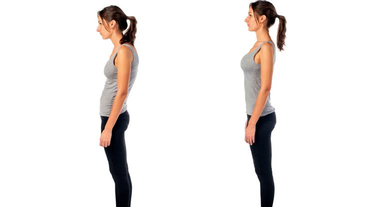
Corrección postural y pautas sencillas para tu día a día.
Ideal si pasas horas sentadoRecuperación y prevención para que vuelvas a entrenar.
Ideal si entrenas y sientes molestias que no se van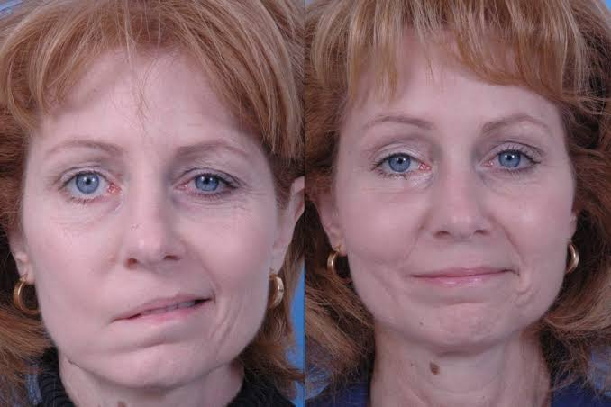
Recuperamos rango de movimiento con técnicas suaves.
Ideal si te cuesta agacharte o girar el cuelloPodología y terapias holísticas. Los precios son referenciales: el valor final se confirma después de tu evaluación.
Las terapias complementarias no reemplazan el diagnóstico ni el tratamiento médico. Si tienes una condición de salud, consulta también con tu médico.
Ofertas vigentes: . Cupos limitados.
Un espacio para conocer tu caso, evaluar tus necesidades y brindarte una orientación profesional y personalizada.
Escuchamos tus molestias, conocemos tus antecedentes y comprendemos cómo afectan tu bienestar.
Examinamos tus pies, postura y columna para identificar tus necesidades de atención.
Te explicamos los resultados de la evaluación y las alternativas de atención más adecuadas para tu caso.
Cuéntanos qué te molesta y te orientamos sin compromiso.